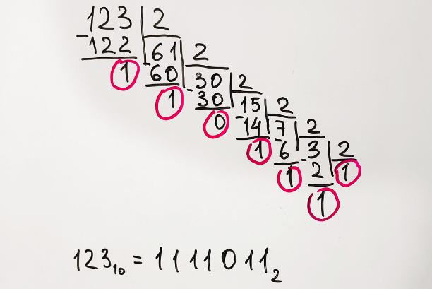

16. Двоичное число в десятичное (в коде есть строки из следующих тем: "строки").
Условие:
Напишите программу, которая будет преобразовывать десятичные значения (по основанию 10) в двоичные (по основанию 2).
Подсказка:

Остается только записать цифры, обведенные красным кружочком, справа налево.
Вуаля, всё готово: 123 10 = 1111011 2 . Число 123 в двоичной системе счисления будет выглядеть, как 1111011.
Код:
# проверка ввода
while True:
digit = input("%50s" % "Введите число в десятичной системе счисления: ")
if digit.isdigit():
break
digit = int(digit)
result = str()
while digit >= 1:
remains = digit % 2
result += str(remains)
digit = int(digit / 2)
result = result[::-1]
print("%49s" % result)